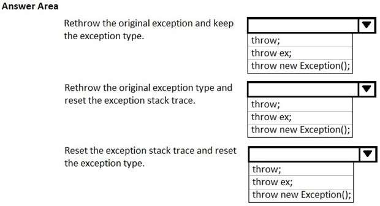
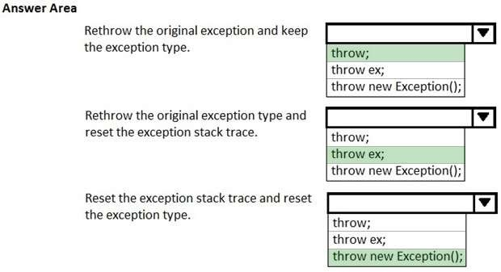

|
HOTSPOT You are writing a code to handle exceptions for a C# application. You need to identify different ways to handle an exception named ex. Which line of code should you use for each task? To answer, select the appropriate options in the answer area. NOTE: Each correct selection is worth one point. Hot Area:  Correct Answer:  Section: Volume B Explanation Explanation/Reference: References: https://blogs.msdn.microsoft.com/perfworld/2009/06/15/how-can-i-throw-an-exception-without- losing-the-original-stack-trace-information-in-net/ ExplicaciónRespuesta:Mostrando de manera visual la respuesta:Fuentes: |